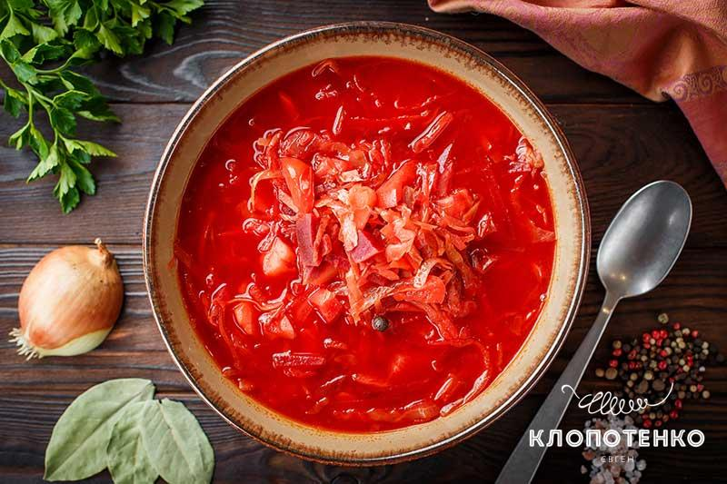

ПОСТНЫЙ БОРЩ ПОЛЕСЬЯ
Начнем свою подборку с вегетарианского борща. Он записан в одном из сел Полесья, где жители рассказали, что раньше мясо было только по большим праздникам, поэтому приходилось перебиваться без него. Лишь иногда ели смалец или сало с чесноком. Поэтому и борщ был постный! Однако это лишь положительно отразилось на его вкусе – он стал еще лучше.
Ингредиенты:
- 2 л воды
- 3-4 картофеля
- 2 свеклы
- 1 лук репчатый
- 200 г квашеной капусты (с рассолом)
- ½ моркови
- ½ болгарского перца
- 1-2 ст. л. меда
- 2 ст. л. томатной пасты
- соли и перца – по вкусу
- Сначала приготовьте отвар из двух свекол. Очистите и разрежьте пополам корнеплод. Залейте его водой и отварите 40 мин до готовности. После продолжайте варить дальше, добавив ½ луковицы.
- Нарежьте 3-4 картофелины кубиками и пол моркови соломкой. Варите их вместе со свеклой.
- Сделайте зажарку. Нарежьте кубиками пол болгарского перца и вторую половину лука. Обжарьте 3-5 минут с небольшим количеством растительного масла. Добавьте 2 ст. л. томатной пасты и протушите еще 2-3 минуты.
- Дайте отвару из свеклы остыть и нарежьте произвольно. А потом – вместе с зажаркой отправьте обратно в отвар.
- Когда все овощи приготовятся, добавьте квашеную капусту с 200 г рассола. Проварите 2-3 минуты и добавьте соль, перец и 1-2 ст.л. меда.
- Оставьте настаиваться готовый борщ 15-20 минут или поместите на это время в духовку на 180 градусов.
- Подавать лучше на следующий день, чтобы настоялся. Так говорят в народе!
Читайте подробный пошаговый рецепт постного борща.